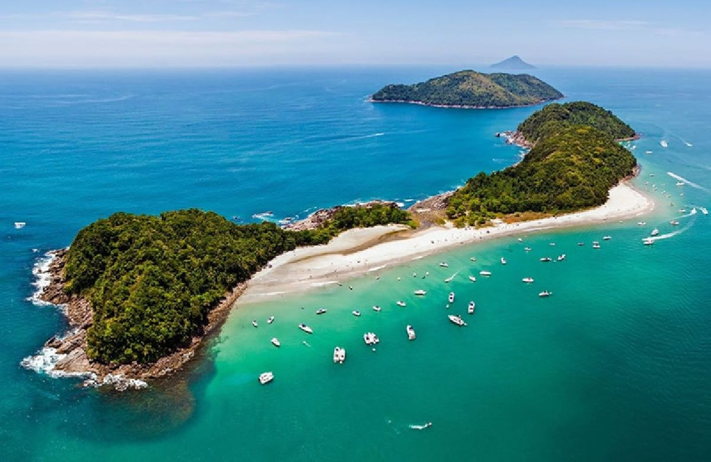

Mais procurado
Táxi Boat · Ida e volta
Travessia rápida · ~5 a 10 min da praia
Travessia de Barco para As Ilhas
Ideal para famílias, casais e grupos que querem passar a manhã ou o dia nas areias brancas e piscinas naturais de As Ilhas (em frente à Barra do Sahy), com horário de retorno combinado direto com o Puruca.
- Embarque fácil na areia da Barra do Sahy com auxílio para bolsas, coolers e guarda-sol
- Desembarque direto na praia da ilha para banho de mar calmo e mergulho de snorkel
- Retorno pontual no horário combinado pelo WhatsApp